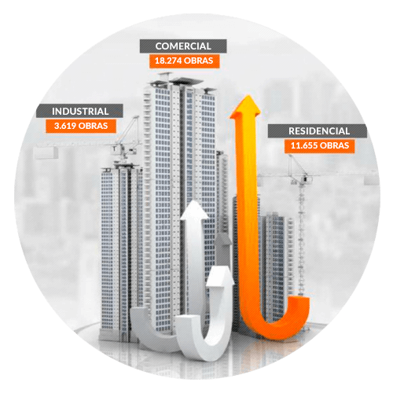

Ferramenta Inteligente e Interativa de Prospecção de Obras e Construtoras.
Em nosso sistema de obras, você terá acesso a quem compra e quem contrata na construção civil brasileira
Amplie o seu leque de prospecção, eliminando o custo com busca de obras, otimizando o tempo e volume de vendas para o seu negócio
Você terá contatos de obras e construtoras podendo fechar parcerias atuais e futuras
Desenvolver e dar acesso contínuo a informações qualitativas e quantitativas confiáveis que permitam às empresas atuantes no fornecimento de insumos (bens e serviços) para as atividades da construção, planejar, de forma ágil e segura, suas previsões de vendas e ações comerciais, potencializando assim seu desempenho empresarial.
A ITC, tem por tradição, ser uma organização contemporânea, idônea, ciosa e cumpridora de todas as suas responsabilidades. É também, detentora de competências corporativas que a habilitam a superar, em muito, as expectativas dos usuários de seus serviços, colaboradores e comunidade em geral.
Por esses elementos de valor, a empresa posiciona suas ofertas por preços justos que geram rentabilidade e recompensam seus esforços empresariais.

Com o sistema de obras InfoITC, você pode alavancar suas vendas acessando contatos de obras, contatos de construtoras e contatos de grupos empreendedores, para assim garantir o ciclo sustentável de novos negócios
Com o nosso banco de dados de mais de 30.000 obras, nossos clientes geram novos negócios para grandes obras, e criam relacionamento direto com grandes construtoras, fechando parcerias para fornecer para obras em andamento e obras futuras, garantindo um ciclo sustentável de grandes negócios.
O sistema Info ITC é um sistema totalmente online, para pesquisa de oportunidades de negócios na construção civil de grande porte. A ITC cataloga diariamente obras em projeto e construção, alimentando nossa base de dados, informando a construtora com os seus dados completos, estágio, prazos e previsões, empresas já contratadas, e contatos de responsáveis pela contratação da mão de obra ou compra de material.
CONDOMÍNIO DE CASAS,
EMPREENDIMENTOS RESIDENCIAIS [+]
EDIFÍCIOS COMERCIAIS, SHOPPING CENTERS,
AEROPORTOS, HOTÉIS [+]
USINAS, FÁBRICAS, REFINARIAS [+]
Novas obras pesquisadas e catalogadas todos os dias.
Atualização de cada obra da Base de Dados conforme sua evolução.
A ITC criou em 2004 o prêmio Ranking ITC que categoriza, classifica e homenageia as 100 maiores construtoras do Brasil, dando a elas o devido respeito e agradecimento pelos benefícios ao Brasil e aos brasileiros.
A Pesquisa Específica formula o método para a coleta de informações, administra e implementa o processo de coleta de dados, analisa os resultados, e comunica as descobertas e a informação é direcionada conforme a necessidade do cliente.
Revista Trend ITC fomenta negócios entre construtoras e fornecedores, publíca a premiação dos vendedores do prêmio Ranking ITC e leva conteúdo jornalístico de qualidade sobre o universo da construção civil nacional.